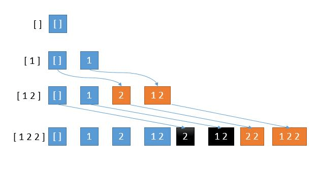

Given a collection of integers that might contain duplicates, nums, return all possible subsets (the power set).
Note: The solution set must not contain duplicate subsets.
Example:
Input: [1,2,2] Output: [ [2], [1], [1,2,2], [2,2], [1,2], [] ]
解题分析
这道题跟 78. Subsets 类似。不一样的地方是要处理重复元素：

第 4 行新添加的 2 要加到第 3 行的所有解中，而第 3 行的一部分解是旧解，一部分是新解。可以看到，我们黑色部分是由第 3 行的旧解产生的，橙色部分是由新解产生的。
而第 1 行到第 2 行，已经在旧解中加入了 2 产生了第 2 行的橙色部分，所以这里如果再在旧解中加 2 产生黑色部分就造成了重复。
所以当有重复数字的时候，我们只考虑上一步的新解，算法中用一个指针保存每一步的新解开始的位置即可。
如果使用递归回溯来解决这个问题，遇到重复的直接跳过就可以了，因为重复字段已经处理过一次了。
参考资料
Given a collection of integers that might contain duplicates, nums, return all possible subsets (the power set).
Note: The solution set must not contain duplicate subsets.
Example:
Input: [1,2,2] Output: [ [2], [1], [1,2,2], [2,2], [1,2], [] ]
1
2
3
4
5
6
7
8
9
10
11
12
13
14
15
16
17
18
19
20
21
22
23
24
25
26
27
28
29
30
31
32
33
34
35
36
37
38
39
40
41
42
43
44
45
46
47
48
49
50
51
52
53
54
55
56
57
58
59
60
61
62
63
64
65
66
67
68
69
70
71
72
package com.diguage.algorithm.leetcode;
import java.util.*;
/**
* = 90. Subsets II
*
* https://leetcode.com/problems/subsets-ii/[Subsets II - LeetCode]
*
* @author D瓜哥, https://www.diguage.com/
* @since 2020-02-05 21:28
*/
public class _0090_SubsetsII {
/**
* Runtime: 2 ms, faster than 27.76% of Java online submissions for Subsets II.
* Memory Usage: 39.4 MB, less than 5.88% of Java online submissions for Subsets II.
*/
public List<List<Integer>> subsetsWithDup(int[] nums) {
List<List<Integer>> result = new ArrayList<>();
Arrays.sort(nums);
backtrack(nums, 0, new ArrayDeque<>(), result);
return result;
}
private void backtrack(int[] nums, int start, Deque<Integer> current, List<List<Integer>> result) {
result.add(new ArrayList<>(current));
for (int i = start; i < nums.length; i++) {
if (i > start && nums[i - 1] == nums[i]) {
continue;
}
int num = nums[i];
current.addLast(num);
backtrack(nums, i + 1, current, result);
current.removeLast();
}
}
/**
* Runtime: 2 ms, faster than 27.76% of Java online submissions for Subsets II.
* Memory Usage: 39.3 MB, less than 5.88% of Java online submissions for Subsets II.
*
* Copy from: https://leetcode-cn.com/problems/subsets-ii/solution/xiang-xi-tong-su-de-si-lu-fen-xi-duo-jie-fa-by-19/[详细通俗的思路分析，多解法 - 子集 II - 力扣（LeetCode）]
*/
public List<List<Integer>> subsetsWithDupAppend(int[] nums) {
List<List<Integer>> result = new ArrayList<>();
result.add(Collections.emptyList());
Arrays.sort(nums);
//保存新解的开始位置
int start = 1;
for (int i = 0; i < nums.length; i++) {
List<List<Integer>> temp = new LinkedList<>();
for (int j = 0; j < result.size(); j++) {
//如果出现重复数字，就跳过所有旧解
if (i > 0 && nums[i - 1] == nums[i] && j < start) {
continue;
}
List<Integer> list = result.get(j);
List<Integer> newList = new ArrayList<>(list);
newList.add(nums[i]);
temp.add(newList);
}
start = result.size();
result.addAll(temp);
}
return result;
}
public static void main(String[] args) {
_0090_SubsetsII solution = new _0090_SubsetsII();
System.out.println(Arrays.toString(solution.subsetsWithDup(new int[]{1, 2, 2}).toArray()));
}
}